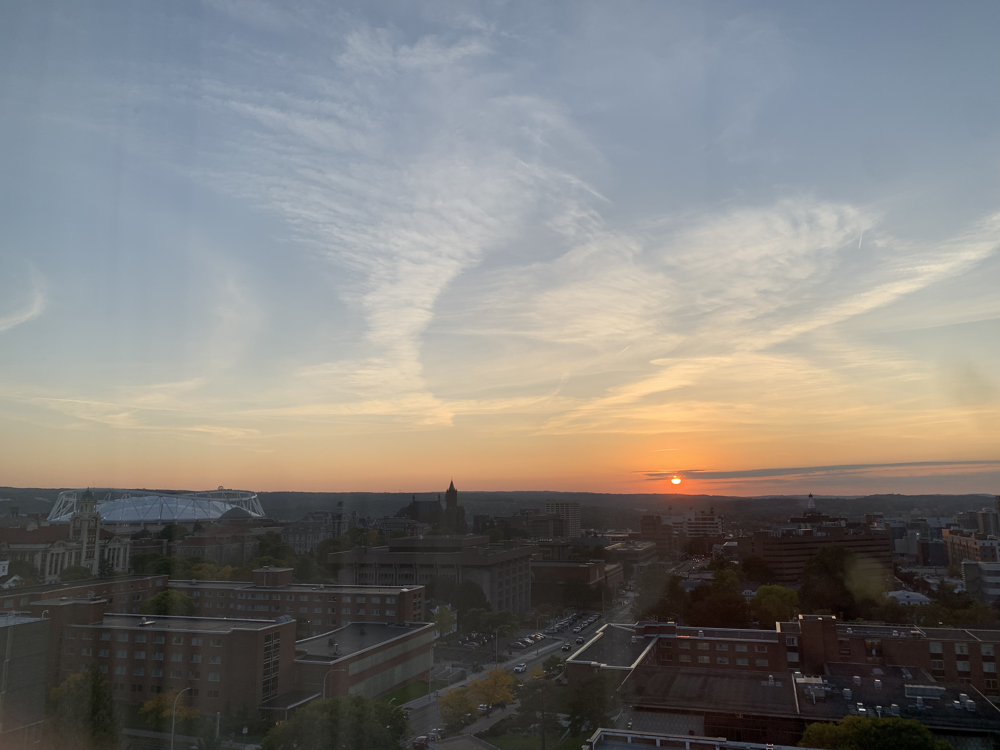

I am actively pursuing internship opportunities to propel my professional career forward. With a fervent aspiration to excel in the realm of project management, I am diligently seeking experiences that will equip me with the skills and knowledge necessary for success in this field. Each application and interview is not just a step towards securing an internship but a strategic move towards realizing my career goals. I am committed to honing my organizational, leadership, and communication abilities, knowing they are integral to thriving in project management. By immersing myself in real-world projects and learning from seasoned professionals, I aim to lay a solid foundation for a fulfilling and impactful career post-graduation.
